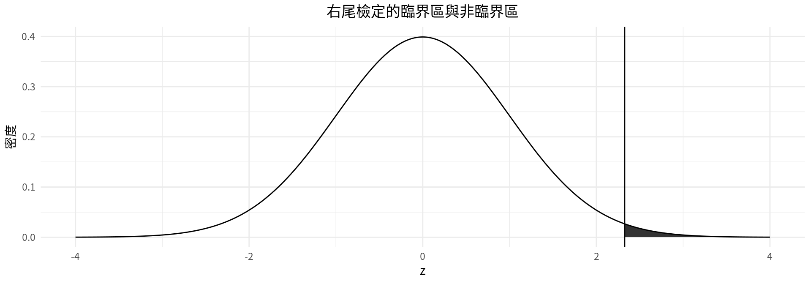
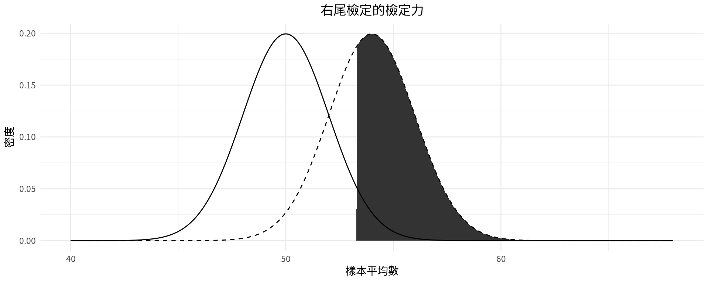

[1] 2.053749[1] -1.959964[1] 1.959964[1] -1.281552第8章：假設檢定
實踐大學
2026-10-08
第8章談的是假設檢定——以樣本資料評估母體參數主張的決策程序。
| 節次 | 主題 |
|---|---|
| 8-1 | 虛無與對立假設；檢定統計量；第一型與第二型錯誤；顯著水準；臨界值與臨界區；單尾與雙尾檢定；傳統方法與 P 值法 |
| 8-2 | \sigma 已知時平均數的 z 檢定；假設條件；傳統方法與 P 值法 |
| 8-3 | \sigma 未知時平均數的 t 檢定；臨界 t 值；P 值區間；z 與 t 的取捨 |
| 節次 | 主題 |
|---|---|
| 8-4 | 比例的 z 檢定；np \geq 5、nq \geq 5 |
| 8-5 | 變異數或標準差的 \chi^2 檢定；臨界 \chi^2 值 |
| 8-6 | 信賴區間與假設檢定；第二型錯誤、\beta 與檢定力 |
讀完本章後，你應該能夠
統計假設檢定是一套評估母體主張的決策程序。研究者必須界定母體、寫出假設、訂定顯著水準、抽取樣本、蒐集資料、進行統計檢定所需的計算，最後做成結論。
檢定假設的三種方法
傳統方法自假設檢定成形以來就一直被採用；P 值法則隨著現代電腦與統計計算機的普及而流行起來。
統計假設
統計假設是對母體參數所做的猜測，這個猜測可能為真，也可能不為真。
虛無假設與對立假設
虛無假設以 H_0 表示，是陳述某一參數與某特定值之間沒有差異，或兩個參數之間沒有差異的統計假設。
對立假設以 H_1 表示，是陳述某一參數與某特定值之間存在差異，或兩個參數之間存在差異的統計假設。
情境 A。 醫學研究者想知道新藥是否改變脈搏率；母體平均數為每分鐘 82 次。H_0: \mu = 82、H_1: \mu \neq 82——雙尾檢定。
情境 B。 化學家發明可延長電池壽命的添加劑；未加添加劑時平均壽命為 36 個月。H_0: \mu = 36、H_1: \mu > 36——右尾檢定。
情境 C。 承包商想以特殊隔熱材把平均每月 $78 的暖氣費降低。H_0: \mu = 78、H_1: \mu < 78——左尾檢定。
成對寫出假設
| 雙尾檢定 | 右尾檢定 | 左尾檢定 | |
|---|---|---|---|
| 平均數 | H_0: \mu = k、H_1: \mu \neq k | H_0: \mu = k、H_1: \mu > k | H_0: \mu = k、H_1: \mu < k |
| 比例 | H_0: p = k、H_1: p \neq k | H_0: p = k、H_1: p > k | H_0: p = k、H_1: p < k |
本書的虛無假設一律以等號寫出。由於研究者通常是在尋找支持主張的證據，主張通常寫成對立假設——這也是 H_1 又稱為研究假設的原因。
把文字轉成符號
| > | < |
|---|---|
| 大於 | 小於 |
| 高於 | 低於 |
| 比⋯⋯高 | 比⋯⋯低 |
| 比⋯⋯長 | 比⋯⋯短 |
| 比⋯⋯大 | 比⋯⋯小 |
| 增加了 | 減少了 |
| = | \neq |
|---|---|
| 等於 | 不等於 |
| 與⋯⋯沒有不同 | 與⋯⋯不同 |
| 沒有改變 | 已經改變 |
| 與⋯⋯相同 | 與⋯⋯不同 |
注意
以「至少」或「至多」寫成的主張屬於虛無假設。
主張可以寫成虛無假設，也可以寫成對立假設；但統計證據只有在主張為對立假設時才能支持該主張，也只有在主張為虛無假設時才能拒絕該主張。
寫出虛無假設與對立假設
為下列各項猜測寫出虛無假設與對立假設。
(a) 某物流主管認為配送中心每張訂單的平均揀貨時間少於 42 秒。
(b) 某旅館集團認為外籍旅客在台北的平均住宿天數多於 2.8 晚。
(c) 某分析師認為台北車站平日平均進站人次已不再是 32 萬人次。
(d) 台灣有 46% 的網購消費者使用超商貨到付款。
(e) 高雄出口貨櫃中，超過 35% 以東南亞為目的地。
(f) 外送平台的訂單中，不到 58% 是在平日下單。
解題
(a) H_0: \mu = 42、H_1: \mu < 42
(b) H_0: \mu = 2.8、H_1: \mu > 2.8
(c) H_0: \mu = 320、H_1: \mu \neq 320
(d) H_0: p = 0.46、H_1: p \neq 0.46
(e) H_0: p = 0.35、H_1: p > 0.35
(f) H_0: p = 0.58、H_1: p < 0.58
統計檢定
統計檢定是利用樣本所得的資料，決定是否應拒絕虛無假設。
由統計檢定算出的數值稱為檢定統計量。
即使 H_0 為真，樣本平均數也鮮少恰好等於母體平均數。這個差距要嘛來自機遇，要嘛是因為樣本來自平均數為其他未知值的母體。樣本平均數離假設值越遠，拒絕 H_0 的證據就越強。
圖 8-2：假設檢定的可能結果
| 決策 | H_0 為真 | H_0 為假 |
|---|---|---|
| 拒絕 H_0 | 第一型錯誤 | 正確決策 |
| 不拒絕 H_0 | 正確決策 | 第二型錯誤 |
第一型錯誤與第二型錯誤
當虛無假設為真卻拒絕它，就發生第一型錯誤。
當虛無假設為假卻沒有拒絕它，就發生第二型錯誤。
此時的假設為 H_0：被告無罪；H_1：被告並非無罪。
圖 8-3：審判結果
| 決策 | H_0 為真（無罪） | H_0 為假（並非無罪） |
|---|---|---|
| 拒絕 H_0（定罪） | 第一型錯誤 | 正確決策 |
| 不拒絕 H_0（無罪開釋） | 正確決策 | 第二型錯誤 |
第一型錯誤把無辜的人送進監獄；第二型錯誤則放走了有罪的人。
判決並未證明被告是否犯罪——判決是依據呈堂證據而定。同樣地，拒絕或不拒絕 H_0 都證明不了什麼；這個決策是依據機率做成的。
顯著水準
顯著水準是犯下第一型錯誤的最大機率，以 \alpha 表示，即 P(\text{第一型錯誤}) = \alpha。
第二型錯誤的機率以 \beta 表示：P(\text{第二型錯誤}) = \beta。
三個慣用水準
統計學家普遍採用 0.10、0.05 與 0.01 三個水準。當 \alpha = 0.10，拒絕一個為真的虛無假設的機會為 10%；\alpha = 0.05 時為 5%；\alpha = 0.01 時為 1%。
多數假設檢定情境中 \beta 並不容易計算；\alpha 與 \beta 互相牽動，降低其中一個會提高另一個。
三個定義
臨界區（拒絕區）是指檢定統計量落在該範圍時，表示差異顯著、應拒絕虛無假設。
非臨界區（不拒絕區）是指檢定統計量落在該範圍時，表示差異很可能來自機遇、不應拒絕虛無假設。
臨界值把臨界區與非臨界區分隔開來，其符號為 C.V.
單尾檢定
單尾檢定是指檢定統計量落在平均數某一側的臨界區時就拒絕虛無假設。單尾檢定可以是右尾檢定或左尾檢定，視對立假設的不等號方向而定。
雙尾檢定
在雙尾檢定中，檢定統計量落在兩個臨界區的任一個時就應拒絕虛無假設。臨界區必須均分為兩半，每一半的面積為 \alpha/2。
z 檢定的臨界值
| 檢定 | \alpha = 0.10 | \alpha = 0.05 | \alpha = 0.01 |
|---|---|---|---|
| 左尾：H_0: \mu = k、H_1: \mu < k | C.V. = -1.282 | C.V. = -1.645 | C.V. = -2.326 |
| 右尾：H_0: \mu = k、H_1: \mu > k | C.V. = +1.282 | C.V. = +1.645 | C.V. = +2.326 |
| 雙尾：H_0: \mu = k、H_1: \mu \neq k | C.V. = \pm 1.645 | C.V. = \pm 1.960 | C.V. = \pm 2.576 |
附錄的表 A-4 可用來人工查出這些值；本章引用的每一個臨界值都是 qnorm() 算出來的數值。
使用表 A-4
步驟 1. 畫圖並標出對應的面積。
步驟 2.
求臨界值
求下列各情況的臨界值，並畫出對應的圖形標示臨界區。附錄的表 A-4 以人工查表也能得到相同的值。
(a) 右尾檢定，\alpha = 0.02。
(b) 雙尾檢定，\alpha = 0.05。
(c) 左尾檢定，\alpha = 0.10。
Prepare data——圖 8-5 的右尾情況，\alpha = 0.01。
Output figure

臨界值 z = 2.326 右側的陰影面積就是臨界區（拒絕區），左側則為非臨界區（不拒絕區）。
完整的研究流程為：(a) 寫出假設，(b) 設計研究，(c) 執行研究並蒐集資料，(d) 評估資料，(e) 總結結果。由於本章略過設計研究與蒐集資料，因此採用簡化的版本。
程序表：解假設檢定問題（傳統方法）
步驟 1. 寫出假設並指出主張。
步驟 2. 由附錄 A 中對應的表求臨界值。
步驟 3. 計算檢定統計量。
步驟 4. 做出拒絕或不拒絕虛無假設的決策。
步驟 5. 總結結果。
結論的寫法
| 決策 | 主張為 H_0 | 主張為 H_1 |
|---|---|---|
| 拒絕 H_0 | 有足夠證據拒絕該主張。 | 有足夠證據支持該主張。 |
| 不拒絕 H_0 | 沒有足夠證據拒絕該主張。 | 沒有足夠證據支持該主張。 |
沒有任何事被證明為真或為假。統計學家只能說有或沒有足夠證據認為某主張很可能為真或為假。
P 值
P 值（機率值）是指當虛無假設為真時，得到某個樣本統計量（例如樣本平均數），或得到朝對立假設方向更極端之樣本統計量的機率。
P 值就是對應分配曲線下的實際面積，代表 H_0 為真時觀察到該樣本統計量或更極端數值的機率。
假設 H_1: \mu > 50，而樣本得到 \bar{X} = 52。若軟體報出 P 值為 0.0356，代表當真實母體平均數為 50 時，得到樣本平均數 52 或更大的機率為 0.0356。對 P = 0.0356 而言，在 \alpha = 0.05 下會拒絕 H_0，但在 \alpha = 0.01 下不會。
注意
雙尾檢定時，單尾面積必須加倍。若單尾面積為 0.0356，P 值為 2(0.0356) = 0.0712，故在 \alpha = 0.05 下不拒絕 H_0。
多數計算機與電腦已直接報出雙尾的精確 P 值，因此不應再加倍一次。
法則
若 P 值 \leq \alpha，拒絕虛無假設。
若 P 值 > \alpha，不拒絕虛無假設。
\alpha 值由研究者在進行統計檢定之前選定；P 值則在算出樣本統計量之後才計算出來。
一般公式
\text{檢定統計量} = \frac{(\text{觀察值}) - (\text{期望值})}{\text{標準誤}}
觀察值是由樣本資料算出的統計量；期望值是 H_0 為真時所預期的參數值；分母則是被檢定統計量的標準誤。
z 檢定
z 檢定是針對母體平均數的統計檢定。當 n \geq 30，或母體為常態分配且 \sigma 已知時皆可使用。其檢定統計量的公式為
z = \frac{\bar{X} - \mu}{\sigma / \sqrt{n}}
其中 \bar{X} 為樣本平均數、\mu 為假設的母體平均數、\sigma 為母體標準差、n 為樣本大小。
\sigma 已知時 z 檢定的假設條件
注意
檢定統計量在投影片上只是報告到小數第二或第三位，方便閱讀；本章所有決策都以 R 計算出的完整精度數值為準。絕不可以先把中間結果四捨五入，再拿四捨五入後的數字繼續算。
超商連鎖店的客單價
某類別經理認為，旗下超商連鎖店目前的平均客單價高於去年公布的 NT$118。假設母體標準差為 NT$12。隨機抽取 35 筆交易，樣本平均客單價為 NT$122.5 （模擬資料）。在 \alpha = 0.05 下檢定此主張。
全島包裹配送時間
某電商平台宣稱全島包裹自出貨起平均 48 小時送達，該變數為常態分配，母體標準差為 9 小時。某類別經理想知道她負責的品類是否顯著更快送達。她隨機抽出 36 件包裹並記錄配送時數如下 （模擬資料）。在 \alpha = 0.10 下，是否有足夠證據支持此主張？
46 52 44 49 41 55
50 43 48 47 39 53
45 51 42 56 38 49
72 44 47 50 46 43
26 48 52 45 49 47
80 41 44 50 30 48解題
步驟 1. H_0: \mu = 48、H_1: \mu < 48 （主張；左尾）。
步驟 2. \alpha = 0.10 且為左尾檢定，臨界值為 -1.282。
步驟 3——整理資料並計算檢定統計量。
解題
步驟 4. 檢定統計量 -0.333 落在非臨界區，因此不拒絕 H_0。
步驟 5. 沒有足夠證據支持「該品類包裹比平台平均更快送達」的主張。
說明. 雖然樣本平均數 47.5 小時低於假設平均數 48 小時，但並非顯著較低，此差距可能來自機遇。不拒絕 H_0 時仍可能犯第二型錯誤，而且不能因此接受 H_0 為真——只是沒有足夠證據說它是假的。
區域航線的託運行李
某航空公司的營運報告指出，台北—東京航線的託運行李平均重量為 18.0 公斤。某載重規劃師隨機抽取 40 件託運行李，樣本平均重量為 19.1 公斤 （模擬資料）。假設母體標準差為 3.0 公斤。在 \alpha = 0.01 下，是否可以斷定平均重量不等於 18.0 公斤？
解假設檢定問題（P 值法）
步驟 1. 寫出假設並指出主張。
步驟 2. 計算檢定統計量。
步驟 3. 求 P 值。
步驟 4. 做出決策。
步驟 5. 總結結果。
決策法則：若 P 值 \leq \alpha 則拒絕 H_0；若 P 值 > \alpha 則不拒絕 H_0。
咖啡連鎖店的單店月營收
某加盟顧問想檢定「單一咖啡連鎖店的平均月營收高於 NT$86 萬」這項主張。她隨機抽取 36 家門市，樣本平均月營收為 NT$90.2 萬 （模擬資料），母體標準差為 NT$11.8 萬。在 \alpha = 0.05 下是否有足夠證據支持此主張？請用 P 值法。
外送員取餐時間
某外送平台宣稱其外送員自餐廳取餐的平均時間為 12 分鐘。抽取 32 次取餐紀錄，樣本平均時間為 12.6 分鐘 （模擬資料），母體標準差為 1.9 分鐘。在 \alpha = 0.05 下，是否有足夠證據拒絕此主張？請用 P 值法。
未事先選定 \alpha 時
有些研究者只報出 P 值，讓讀者自行判斷，此時可參考以下準則。
母體標準差未知時，通常不用 z 檢定來檢定平均數，而改用 t 檢定，且變數的分配應近似常態。
t 分配與標準常態分配的比較
相似之處。 呈鐘形；對平均數左右對稱；平均數、中位數與眾數皆等於 0 且位於分配中央；曲線趨近但永不接觸 x 軸。
相異之處。 變異數大於 1；它是依自由度而定的一族曲線；隨著樣本大小增加，t 分配趨近常態分配。
t 檢定
t 檢定是針對母體平均數的統計檢定，用於母體為常態或近似常態分配且 \sigma 未知的情況。其檢定統計量的公式為
t = \frac{\bar{X} - \mu}{s / \sqrt{n}}
自由度為 \text{d.f.} = n - 1。
此公式與 z 檢定相同，只是以樣本標準差 s 取代未知的 \sigma。
注意
表 A-5 列出自由度 1 到 30，超過 30 之後則為間隔值。若以人工查表且自由度超過 30，則無條件捨去到最接近的表列值——例如 \text{d.f.} = 59 時讀 \text{d.f.} = 55，這是較保守的作法。
自由度越大，臨界值越接近 z 值。在 R 中，qt() 會直接給出該自由度的臨界值，本章每一張投影片引用的都是這個值；捨去規則只在人工查表時才需要。
臨界 t 值（右尾）
求 \alpha = 0.05、\text{d.f.} = 19 的右尾 t 檢定臨界值。
臨界 t 值（左尾）
求 \alpha = 0.01、\text{d.f.} = 17 的左尾 t 檢定臨界值。
臨界 t 值（雙尾）
求 \alpha = 0.05、\text{d.f.} = 23 的雙尾檢定臨界值。
臨界 t 值（右尾）
求 \alpha = 0.10、\text{d.f.} = 12 的右尾檢定臨界值。
\sigma 未知時 t 檢定的假設條件
t 檢定的傳統方法
步驟與 z 檢定相同，只是臨界值改查表 A-5：寫出假設並指出主張、求臨界值、計算檢定統計量、做出決策、總結結果。
客服通話處理時間
某客服中心宣稱客服人員處理一通電話的平均時間為 4.5 分鐘。隨機抽取 12 通電話，樣本平均處理時間為 5.3 分鐘，樣本標準差為 1.1 分鐘 （模擬資料）。在 \alpha = 0.05 下，是否有足夠證據拒絕此主張？假設該變數為常態分配。
出口發票的收款天數
某產業報告指出，小型出口商平均要等 27 天才收到貨款。某貿易金融分析師認為使用她平台的出口商收款更快。隨機抽取 10 張發票，其收款天數如下 （模擬資料）。在 \alpha = 0.10 下檢定此主張，並假設該變數為常態分配。
24 31 19 27 22 30 18 25 21 26解題
步驟 1. H_0: \mu = 27、H_1: \mu < 27 （主張；左尾）。
步驟 2. \alpha = 0.10 且 \text{d.f.} = 9，臨界值為 -1.383。
步驟 3——整理資料並計算檢定統計量。 既然有原始資料，就交給 t.test() 計算。
[1] 24.3[1] 4.372896 t
-1.952516 [1] -1.383029步驟 4. -1.953 落在臨界區，因此拒絕 H_0。
步驟 5. 有足夠證據支持「平台上的出口商收款天數少於 27 天」的主張。
t 檢定的 P 值無法直接由表 A-5 讀出，因為表中只列出少數幾個 \alpha 值。由表只能求出 P 值的區間：找到自由度所在的列，找出檢定統計量落在哪兩個表列值之間，再由 One tail 列（單尾檢定）或 Two tails 列（雙尾檢定）讀出對應的 \alpha 值。
注意
R 的 pt() 給出精確 P 值。表 A-5 只能給出區間，而精確值必定落在該區間內。本章所有決策都以精確值為準。
P 值區間（右尾）
當 t 檢定統計量為 2.462、樣本數為 14、且為右尾檢定時，求其 P 值。
P 值區間（雙尾）
當 t 檢定統計量為 2.575、樣本數為 9、且為雙尾檢定時，求其 P 值。
計畫會員的出口櫃量
某貿易公會主張，加入其出口拓銷計畫的廠商，每月出口櫃量高於業界平均的 24 櫃。隨機抽取 15 家會員廠商，樣本平均為每月 27.8 櫃，標準差為 6.2 櫃 （模擬資料）。在 \alpha = 0.05 下是否有足夠證據支持此主張？假設該變數為常態分配，並用 P 值法。
解題
步驟 1. H_0: \mu = 24、H_1: \mu > 24 （主張；右尾）。
步驟 2 與步驟 3——計算檢定統計量與 P 值。
查表 A-5 在 \text{d.f.} = 14 時，2.3738 落在 2.145 與 2.624 之間，故 0.01 < P\text{ 值} < 0.025；精確 P 值為 0.0162。
步驟 4. P 值 < \alpha，因此拒絕 H_0。
步驟 5. 有足夠證據支持「會員廠商每月出口櫃量高於 24 櫃」的主張。
圖 8-23：判準
這與第7章信賴區間所用的判準完全相同。
許多假設檢定情境牽涉到比例；比例就是母體中的百分比。當結果只有兩種、且成功機率在各次試驗間不變時，母體比例的假設檢定可視為二項試驗。
由於 np \geq 5 且 nq \geq 5 時常態分配可用來近似二項分配，因此可用標準常態分配來檢定比例的假設。
檢定統計量
z = \frac{\hat{p} - p}{\sqrt{pq/n}}
其中 \hat{p} = X/n 為樣本比例、p 為假設的母體比例、q = 1 - p、n 為樣本大小。
此公式遵循一般形式：\hat{p} 為觀察值、p 為期望值、\sqrt{pq/n} 為標準誤。它由二項分配的常態近似推導而得：代入 \mu = np 與 \sigma = \sqrt{npq}，再將分子與分母同除以 n。
三項假設
臨界值與 P 值皆查表 A-4。範例 8-17 至 8-19 採用傳統方法，範例 8-20 採用 P 值法。
行動支付付款
某市調報告宣稱，台灣有 30% 的網購消費者使用行動支付付款。為檢定此主張，一位學生隨機抽取 120 位網購消費者，其中 42 位使用行動支付 （模擬資料）。在 \alpha = 0.05 下，是否有足夠證據拒絕此主張？
接受行動支付的夜市攤位
某產業調查指出，有 40% 的夜市攤位接受行動支付。某研究者認為某個特定夜市的比例低於此數。她在該夜市隨機抽取 60 個攤位，其中 20 個接受行動支付 （模擬資料）。在 \alpha = 0.01 下，是否有足夠證據支持此主張？
線上預訂住宿
某觀光報告指出，來台旅客中至少有 72% 在線上預訂住宿。為檢視此主張是否成立，研究者隨機抽取 90 位來台旅客，其中 60 位是在線上預訂 （模擬資料）。在 \alpha = 0.01 下，檢定「至少 72% 的來台旅客在線上預訂住宿」這項主張。
寄往日本的跨境訂單
某支付公司主張，自台灣下單的跨境電商訂單中，超過 20% 寄往日本。隨機抽取 250 筆跨境訂單，其中 63 筆寄往日本 （模擬資料）。在 \alpha = 0.05 下，是否有足夠證據支持此主張？請用 P 值法。
使用表 A-6 的三種情況
表 A-6 給出的是臨界值右側的面積。
在 R 中 qchisq(area, df) 傳回的是左側面積為 area 的數值，因此下面的引數才會寫成 1 - \alpha、\alpha 等等。
臨界卡方值（右尾）
當自由度為 18、\alpha = 0.05 且為右尾檢定時，求其臨界卡方值。
臨界卡方值（左尾）
當自由度為 14、\alpha = 0.05 且為左尾檢定時，求其臨界卡方值。
臨界卡方值（雙尾）
當自由度為 19、\alpha = 0.10 且進行雙尾檢定時，求其臨界卡方值。
注意
表 A-6 只列到自由度 30。當自由度超過表列範圍時，直接使用自由度 30 的表列值，此作法可使第一型錯誤維持在 \alpha 之內。
變異數檢定的三種情況
若研究者認為母體變異數大於 225：H_0: \sigma^2 = 225、H_1: \sigma^2 > 225——右尾檢定。
若認為小於 225：H_0: \sigma^2 = 225、H_1: \sigma^2 < 225——左尾檢定。
若不指定方向：H_0: \sigma^2 = 225、H_1: \sigma^2 \neq 225——雙尾檢定。
公式
\chi^2 = \frac{(n-1)s^2}{\sigma^2}
自由度為 n - 1，其中 n 為樣本大小、s^2 為樣本變異數、\sigma^2 為母體變異數。
單一變異數卡方檢定的假設條件
凡是要求一致性的場合，都希望變異越小越好。製造螺栓時，直徑的變異必須降到最低，否則螺帽就鎖不上。在教育上，同一份測驗重複施測於同一批學生應得到相近的分數，因此每位學生成績的變異數應該很小——但若測驗是用來判斷學習成效，全體成績的標準差反而應該夠大，才能區分學會與沒學會的人。
注意
檢定母體變異數或標準差的方法並不穩健。若資料來自非常態分配的母體，就不能使用這些方法。
零食包裝的填充重量
某品管工程師想知道，某條產線零食包裝填充重量的變異數是否小於製程標準 \sigma^2 = 36（單位：公克平方）。自該產線隨機抽取 12 包，樣本變異數為 s^2 = 27 （模擬資料）。在 \alpha = 0.05 下檢定她的主張。
每小時揀貨訂單數
某配送中心主管認為，每小時揀貨訂單數的標準差大於 6。隨機抽取 15 個小時，各小時的揀貨訂單數如下 （模擬資料）。在 \alpha = 0.10 下，是否有足夠證據支持該主管的主張？假設該變數為常態分配。
38 52 45 61 40
55 33 48 57 42
36 50 65 44 39解題
步驟 1. H_0: \sigma = 6、H_1: \sigma > 6 （主張；右尾）。題目給的是標準差，須先平方得到變異數。
步驟 2. 右尾檢定，\text{d.f.} = 14 且 \alpha = 0.10，臨界值為 21.064。
步驟 3——整理資料並計算檢定統計量。
[1] 9.516902[1] 35.22222[1] 21.06414步驟 4. 35.222 > 21.064，因此拒絕 H_0。
步驟 5. 有足夠證據支持「每小時揀貨訂單數的標準差大於 6」的主張。
泡麵包裝的淨重
某代工廠想檢定「其泡麵包裝淨重的變異數為 2.25」這項主張。淨重以公克為單位，並假設為常態分配。隨機抽取 20 包，樣本標準差為 1.8 公克 （模擬資料）。在 \alpha = 0.05 下，是否有足夠證據拒絕該廠的主張？
解題
步驟 1. H_0: \sigma^2 = 2.25 （主張）、H_1: \sigma^2 \neq 2.25 （雙尾）。
步驟 2. 雙尾檢定且 \alpha = 0.05，需要 0.025 與 0.975 的臨界值。\text{d.f.} = 19 時分別為 8.907 與 32.852。
步驟 3——計算檢定統計量。 題目給的是樣本標準差，代入公式前須先平方。
[1] 27.36[1] 8.906516[1] 32.85233步驟 4. 8.907 < 27.360 < 32.852，因此不拒絕 H_0。
步驟 5. 沒有足夠證據拒絕「泡麵包裝淨重的變異數等於 2.25」的主張。
卡方檢定的近似 P 值同樣可由表 A-6 求得，但程序比 z 與 t 檢定複雜，因為卡方分配並不對稱，且 \chi^2 值不可能為負。
區間的讀法
P 值區間（右尾）
當 \chi^2 = 21.5、n = 11 且為右尾檢定時，求其 P 值。
P 值區間（左尾）
當 \chi^2 = 5.892、n = 15 且為左尾檢定時，求其 P 值。
進口報關時間
某報關業者由過往紀錄得知，一只進口貨櫃完成通關所需時間的標準差為 9.5 小時。隨機抽取 25 只貨櫃計時，標準差為 7.0 小時 （模擬資料）。在 \alpha = 0.05 下，是否可以斷定標準差已經改變？請用 P 值法，並假設該變數為常態分配。
解題
步驟 1. H_0: \sigma = 9.5、H_1: \sigma \neq 9.5 （主張；雙尾）。
步驟 2 與步驟 3——計算檢定統計量與 P 值。
在 \text{d.f.} = 24 時，13.0305 落在 12.401 與 13.848 之間，分別對應 0.975 與 0.95；以 1 相減得 0.025 與 0.05，雙尾再加倍得 0.05 < P\text{ 值} < 0.10；精確 P 值為 0.0688。
步驟 4. P 值 > \alpha，因此不拒絕 H_0。
步驟 5. 沒有足夠證據支持「通關時間的標準差已經改變」的主張。
空運貨物的申報價值
某貿易雜誌報導，自桃園出口的空運貨物平均申報價值為 NT$6.8 萬。某承攬業者隨機抽取近期 50 批貨物，平均申報價值為 NT$6.38 萬，標準差為 NT$0.96 萬 （模擬資料）。在 \alpha = 0.05 下，是否有足夠證據斷定平均申報價值不是 NT$6.8 萬？假設該變數為常態分配。另求母體平均數的 95% 信賴區間。
茶包紙盒的淨重
某供應商宣稱其茶包紙盒的平均淨重為 120 公克。隨機抽取 10 盒，樣本平均淨重為 118.6 公克，標準差為 2.8 公克 （模擬資料）。在 \alpha = 0.05 下，能否拒絕此主張？另求母體平均數的 95% 信賴區間。假設該變數為常態分配。
解題
步驟 1. H_0: \mu = 120 （主張）、H_1: \mu \neq 120 （雙尾）。
步驟 2. \alpha = 0.05 且 \text{d.f.} = 9，臨界值為 +2.262 與 -2.262。
步驟 3——計算檢定統計量與信賴區間。
[1] -1.581139[1] 2.262157[1] 116.597[1] 120.603步驟 4 與步驟 5. 不拒絕 H_0。沒有足夠證據拒絕「平均淨重為 120 公克」的主張。95% 信賴區間 116.6 < \mu < 120.6 包含 \mu = 120，兩者結論一致。
圖 8-40：假設檢定的各種可能
| 決策 | H_0 為真 | H_0 為假 |
|---|---|---|
| 拒絕 H_0 | 第一型錯誤，\alpha | 正確決策，1 - \beta |
| 不拒絕 H_0 | 正確決策，1 - \alpha | 第二型錯誤，\beta |
\beta 的大小取決於 \alpha、樣本大小、母體標準差，以及假設參數與真實參數之間的實際差距。由於最後這項差距未知，\beta 無法計算。
檢定力
檢定力衡量的是：若參數之間確實存在真實差異，該檢定偵測出此差異的靈敏度。檢定力等於
\text{檢定力} = 1 - \beta
檢定力是機率，取值介於 0 與 1 之間。檢定力越接近 1，在虛無假設確實為假時拒絕它的能力就越強。若 \beta = 0.04，檢定力為 1 - 0.04 = 0.96，即 96%。
兩個可行作法
兩者都不可任意使用。提高 \alpha 之前必須先考量第一型錯誤的後果；加大樣本則會增加經費與時間成本。
當有多種統計檢定可選時，應選用檢定力最高者——前提是其假設條件能被滿足；若無法滿足，就只能改用檢定力較低的方法。
Prepare data——在 H_0: \mu = 50 與真值 \mu = 54 之下 \bar{X} 的分配，其中 \sigma = 10、n = 25，為 \alpha = 0.05 的右尾檢定。
Output figure

實線為 H_0: \mu = 50 下的分配，虛線為真值 \mu = 54 下的分配。陰影面積就是檢定力 1 - \beta = 0.639，虛線曲線未被塗滿的部分則是 \beta = 0.361。增加 n 會讓兩條曲線變窄，檢定力隨之提高。
注意
研究者未能拒絕虛無假設時，這並不表示沒有足夠證據支持對立假設。也可能是虛無假設確實為假，只是該統計檢定的檢定力太低、偵測不出真正的差異。此時只能說：在本次研究中沒有足夠證據拒絕虛無假設。
無論決策是拒絕 H_0 或不拒絕 H_0，都有犯錯的可能。我們的目標是讓第一型與第二型錯誤的機率都盡可能小。
第8章詞彙
\alpha（alpha） · 對立假設 · \beta（beta） · 卡方檢定 · 臨界區（拒絕區） · 臨界值 · 假設檢定 · 左尾檢定 · 顯著水準 · 非臨界區（不拒絕區） · 虛無假設 · 單尾檢定 · 檢定力 · P 值 · 研究假設 · 右尾檢定 · 統計假設 · 統計檢定 · 檢定統計量 · t 檢定 · 雙尾檢定 · 第一型錯誤 · 第二型錯誤 · z 檢定
母體平均數的檢定
檢定統計量的一般形式：
\text{檢定統計量} = \frac{(\text{觀察值}) - (\text{期望值})}{\text{標準誤}}
母體平均數的 z 檢定——若 n < 30，變數必須為常態分配：
z = \frac{\bar{X} - \mu}{\sigma / \sqrt{n}}
母體平均數的 t 檢定，\text{d.f.} = n - 1——若 n < 30，變數必須為常態分配：
t = \frac{\bar{X} - \mu}{s / \sqrt{n}}
比例、變異數與標準差的檢定
比例的 z 檢定，需滿足 np \geq 5 與 nq \geq 5，其中 \hat{p} = X/n、q = 1 - p：
z = \frac{\hat{p} - p}{\sqrt{pq/n}}
變異數或標準差的卡方檢定，\text{d.f.} = n - 1——變數必須為常態分配：
\chi^2 = \frac{(n-1)s^2}{\sigma^2}
檢定力：
\text{檢定力} = 1 - \beta
重點
重點
Copyright notice. These teaching materials follow the organization and terminology of Bluman, A. G. (2023). Elementary statistics: A step by step approach (11th ed.). McGraw Hill. All rights in the original work are reserved by its authors and publishers.
Original examples. Every worked example, data set, and R script in these slides was written for this course. The data are hypothetical unless stated otherwise.
Non-commercial use only. These materials are strictly intended for educational purposes and must not be used for commercial gain or profit.
Proper attribution. Any reproduction, distribution, or use of these materials must provide proper attribution to the original source.

Elementary Statistics: A Step by Step Approach